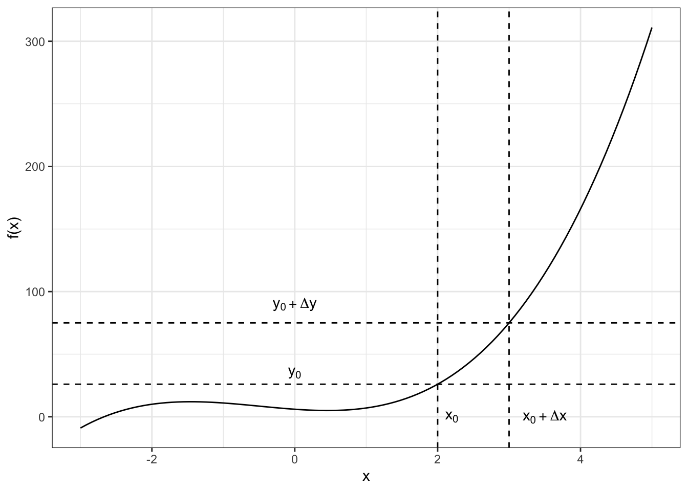

3 L3 // Математика для анализа данных
3.1 Дискретная математика
3.1.1 Алгебра логики
Логика исследует закономерности мышления, но делает это отлично от того, как этим занимается, например, психология. Формальная логика абстрагируется от связей мышления с какими-либо сторонами сознания и сосредотачивается на логической непротиворечивости и последовательности мышления. Таким образом, формальная логика — это наука об общих структурах правильного мышления в его языковой форме (Зегет (1985)).
Логика — это нормативная наука, то есть она определяет, как оно должно быть, в то время как, например, психология исследуется как оно есть и как и почему логические законы нарушаются.
3.1.1.1 Высказывания
Логика как наука имеет дело, прежде всего, с высказываваниями. Высказывание отражает определённую объективную1 связь между предметами. Высказывание истинно, если в нём содержится адеквантное отражение этой связи — в ином случае высказывание ложно. В общем случае высказывание существует с форме повествовательного предложения.
Например, высказывание «Земля вращается вокруг Солнца» отражает объективное отношение, поэтому оно истинно, а высказывание «страницы этой книги зелёного цвета» не адекватно отражает существующее положение дел, поэтому оно ложно.
Прежде всего, нас будут интересовать атомарные высказывания. Это элементарные высказывания, которые невозможно разделить на составляющие — более мелкие высказывания. Например, «четыре — это целое число» — это атомарное высказывание.
Атомарные высказывания могут быть либо истинны, либо ложны. Почему? Потому что мы находимся в рамках двузначной логики2. Атомарные высказывания могут быть обозначены пропозициональными переменными. Так же как и числа в математике могут быть заменены буквеными обозначениями для абстрагирования от значения числа, так же и высказывания заменяются переменными для абстрагирования от содержания высказывания.
Для обозначения пропозициональных переменных используются латинские буквы. А так как само высказывания имеет опредлённое значение истинности (истина и ложь), то и переменная, которой мы обозначаем это высказывание, также будет обладать этим же значением истинности. Всё аналогично математике.
3.1.1.2 Логические операции
С атомарными высказываниями можно выполнять различные логические операции.
3.1.1.2.1 Инверсия
Самая простая операция — инверсия, или отрицание. Оно обозначается с помощью оператора \(\neg\). Это унарная операция, то есть она применяется к одной переменной. При отрицании значение истинности высказывания изменяется на противоположное, поэтому мы можнм составить следующую таблицу истинности для отрицания:
| \(p\) | \(\neg p\) |
|---|---|
| истина | ложь |
| ложь | истина |
В данном случае с помощью переменной \(p\) обозначено некоторые атомарное высказывание.
Особо стоит отметить, что при отрицании отрицается всё высказывание целиком, а не какой-то отдельный его элемент. То есть формально правильным вариантом отрицания высказывания «все лебеди белые» будет следующий — «неверно, что все лебеди белые».
Графически инверсия отображается так:

Из атомарных высказываний можно составлять сложные высказывания при помощи логических операторов. Например, высказывание «если четыре делится на два, то четыре — чётное число» является сложным, посколько состоит из двух атомарных — «четыре делится на два» и «четыре — чётное число» — соединённых союзом «если…, то…».
Далее мы пристумаем с знакомству с бинарными операторами, то есть такими, которые функционируют на двух аргументах.
3.1.1.2.2 Конъюнкция
Конъюнкция (логическое умножение, логические И) представляет собой такое высказывание, которое наиболее точно передается следующей конструкцией естественного языка — «как \(p\), так и \(q\)».
\(p\) и \(q\) в данном случае пропозициональные переменные, которые заменяют конкретные высказывания. Конъюнкция истинна тогда и только тогда, когда обе пропозициональные переменные, входящие в её состав, имеют значении истинности «истина». В любом ином случае конъюнкция ложна.
Конъюнкция обозначается символом \(\wedge\) и имеет следующую таблицу истинности:
| \(p\) | \(q\) | \(p \wedge q\) |
|---|---|---|
| истина | истина | истина |
| истина | ложь | ложь |
| ложь | истина | ложь |
| ложь | ложь | ложь |
Графически конъюнкция отображается так:

3.1.1.2.3 Дизъюнкция
Дизъюнкция (логическое сложение, логические ИЛИ) представляет собой такое высказывание, которое наиболее точно передается следующей конструкцией естественного языка — «или \(p\), или \(q\), или и то и другое», поэтому дизъюнкция истинна тогда, когда хотя бы одна пропозициональная переменная, входящая в её состав, имеет значении истинности «истина». В случае, если оба высказывания ложны, дизъюнкция будет ложна.
Дизъюнкция обозначается символом \(\vee\) и имеет следующую таблицу истинности:
| \(p\) | \(q\) | \(p \vee q\) |
|---|---|---|
| истина | истина | истина |
| истина | ложь | истина |
| ложь | истина | истина |
| ложь | ложь | ложь |
Графически дизъюнкция отображается так:

3.1.1.2.4 Разделительная дизъюнкция
Разделительная дизъюнкция (исключающее ИЛИ) — это такое высказывание, которое наиболее полно описывается следующим выражением естественного языка — «либо \(p\), либо \(q\)». На её графическом представлении хорошо видно, чем она отличается от обычной дизъюнкции — она исключает ту часть пространства, где верны оба высказывания:

Для обозначения разделительно дизъюнкции есть много различных операторов, но мы будем записывать её так — \(p \,\text{XOR}\,q\). По иллюстрации можно восстановить таблицу истинности для этого оператора:
| \(p\) | \(q\) | \(p \,\text{XOR}\,q\) |
|---|---|---|
| истина | истина | ложь |
| истина | ложь | истина |
| ложь | истина | истина |
| ложь | ложь | ложь |
Таким образом, видно, что исключающее ИЛИ истинно тогда, когда значения истинности пропозициональных переменных, входящих в сложное высказывание, различны.
3.1.1.3 Условные высказывания
3.1.1.3.1 Импликация
Сложное высказывание, описываемое конструкцией естественного языка «если \(p\), то \(q\)» в формальной логике носит название импликации. Она отражает следование одного утверждения из другого и обозначается следующим образом — \(p \rightarrow q\). Высказывание \(p\) называется антецедентом имликации, а \(q\) — консеквентом импликации.
Импликация имеет следующую таблицу истиности:
| \(p\) | \(q\) | \(p \rightarrow q\) |
|---|---|---|
| истина | истина | истина |
| истина | ложь | ложь |
| ложь | истина | истина |
| ложь | ложь | истина |
Как видно из таблицы, импликация ложна только тогда, когда её антецедент истинен, и консеквент — ложен. Но что более интересно, так это то, что, согласно таблице, из ложного утверждения может следовать любое. Это факт мы вспомним, когда будем обсуждать тестирование статистических гипотез.
Импликацию утвержает то же самое, что и следующее сложное высказывание — \(\neg (p \wedge \neg q)\). Отсюда можно получить графическое изображение импликации:

3.1.1.3.2 Репликация
Репликация похожа на импликацию, но действует как бы в обратном направлении, что отражено в её обозначении — \(p \leftarrow q\). Эта конструкция читается как «\(p\) реплицирует \(q\)» и является эквивалентом естественноязыкового «только если \(p\), то \(q\)». Соответствующим образом изменяется и таблица истиности:
| \(p\) | \(q\) | \(p \leftarrow q\) |
|---|---|---|
| истина | истина | истина |
| истина | ложь | истина |
| ложь | истина | ложь |
| ложь | ложь | истина |
Идея здесь в том, что если мы получили в результате истину, то лжи в начале быть не могло. Графическое изображение репликации выглядит так:

3.1.1.3.3 Эквиваленция
Если мы соединим с помощью конъюнкции импликацию и репликацию, то есть запишем вот такое высказывание — \((p \rightarrow q) \wedge (p \leftarrow q)\) — то получим эквиваленцию. По своей сути она является логическим отражением языковой конструкции «только если \(p\), то \(q\)», поэтому она обозначается вот так — \(p \leftrightarrow q\) — и её таблица истинности выглядит соответствующим образом:
| \(p\) | \(q\) | \(p \leftrightarrow q\) |
|---|---|---|
| истина | истина | истина |
| истина | ложь | ложь |
| ложь | истина | ложь |
| ложь | ложь | истина |
Из неё выводится графическое представление эквиваленции:

3.1.2 Элементы теории множеств
На базе теории множеств стоит вся современная математика. Мы ознакомимся только c некоторыми концепциями этого раздела математики, но вообще полезно с ним познакомиться гораздо глубже.
3.1.2.1 Множество
Понятие множества неопределимо. По крайней мере силами самой теории множеств. Но мы будем понимать под множеством совокупность, или набор, некоторых (в общем случае любых) объектов. Это могут быть числа, буквы, точки и любые другие объекты. Объекты, входящие в состав множества, называются элементами этого множества.
Множества обозначают заглавными латинскими буквами (например, \(A\)), а его элементs — прописными латинскими буквами (например, \(a_1\), \(a_2\) и т.д.).
Множества удобно изображать кружочками. Примерно так:

Если элемент входит в данное множество, то мы говорим, что этот элемент принадлежит данному множеству, и записываем это следующим образом:
\[ a_i \in A \]
Символ \(\in\) читается как «принадлежит».
Если мы хотим задать множество через перечисление элементов, то можно это сделать с помощью фигурных скобок вот так:
\[ B = \{ 0,1,2,3,4,5 \} \]
В данном случае множество \(B\) содержит 6 элементов — числа от нуля до пяти.
Приведём примеры множеств.
- Множество букв русского алфавита: \(L = \{ а, б, в, г, д, \dots, э, ю, я \}\)
- Множество всех натуральных чисел4: \(\mathbb{N}= \{ 0, 1, 2, 3, \dots \}\)
- Множество всех целых чисел: \(\mathbb{Z}= \{0, 1, -1, 2, -2, 3, -3, \dots \}\)
Также из числовых множеств мы можем вспомнить рациональные числа \(\mathbb{Q}\), действительные (вещественные) числа \(\mathbb{R}\) и комплексные числа \(\mathbb{C}\).
Мы можем взять и рассмотреть не все элементы какого-то множества, а какую-то их часть. Например, взять элементы \(a_1\) и \(a_2\) и объединить их в множество поменьше.

Мы получим множество \(A_1 = \{a_1, a_2\}\), которое является подмножеством множества \(A\). Иначе говоря, множество \(A_1\) включается во множество \(A\):
\[ A_1 \subset A \]
В частности, множество натуральных чисел включается во множество целых \(\mathbb{N}\subset \mathbb{Z}\). А если продолжить эту цепочку, то можно получить следующую иерархию числовых множеств:
\[ \mathbb{N}\subset \mathbb{Z}\subset \mathbb{Q}\subset \mathbb{R}\subset \mathbb{C} \]
Тривиальными подмножествами любого множества является пустое множество \(\varnothing\) и само это множество. Пусть \(M\) — любое множество. Тогда можно записать два справедливых утверждения:
\[ \varnothing \subset M \]
\[ M \subset M \]
3.1.2.2 Операции над множествами
3.1.2.2.1 Объединение
Над множествами можно производить определённые операции. Во-первых, множества можно складывать, или объединять:
\[ A + B = A \cup B = \{ x : x \in A \vee x \in B \} \]
Тогда в новом множестве окажутся все элементы обоих исходных множеств.

3.1.2.2.2 Пересечение
Во-вторых, множества можно умножать, или находить их пересечение:
\[ A \cdot B = A \cap B = \{ x : x \in A \wedge x \in B \} \]
Тогда в новом множестве окажутся те элементы, которые принадлежат обоим множествам сразу.

3.1.2.2.3 Разность множеств
В-третьих, можно искать разность множеств:
\[ A ∖ B = \{ x : x \in A \wedge x \notin B \} \]

В частности, если мы будем искать разность между универсумом \(U\) — множеством, которое содержит вообще все возможные элементы — и множеством \(A\), мы получим дополнение множества \(A\):
\[ U ∖ A = A^c = \bar A = \{ x : x \notin A \} \]

3.1.2.2.4 Симметрическая разность
А ещё можно вычитать множества друг из друга, то есть искать их симметрическую разность:
\[ A \, \Delta \, B = ( A ∖ B ) \cup ( B ∖ A ) = \{ x : x \in A \text{XOR} \x \in B \} \]

Эту операцию с применением законов де Моргана можно записать еще и так:
\[ A \, \Delta \, B = (A \cup B)^c = A^c \cap B^c \]
3.1.2.2.5 Декартово произведение
Ну, и самое красивое — декартово произведение двух множеств. Пусть у нас есть два множества \(A\) и \(B\). Тогда их декартово произведение представляет собой множество всех возможных упорядоченных пар \((a,b), a \in A, b \in B\).
\[ A \times B = \{ (a,b) : a \in A, b \in B \} \]

Упорядоченность подразумевает, что если мы будем перемножать \(A \times B\), то будут получаться пары \((a,b)\), а если \(B \times A\), то пары \((b,a)\).
К слову, вспомните координатную плоскость — это ни что иное, как декартово произведение двух координатных прямых: \(\mathbb{R}\times \mathbb{R}= \mathbb{R}^2 = \{ (x, y) : x \in \mathbb{R}, y \in \mathbb{R}\}\).
3.1.2.3 Отображения
Мы можем сопоставлять элементы много множества элементам другого. Тогда мы получим отображение. Например, мы можем взять множество букв латинского алфавита и сопоставить каждому элменту этого множества число, которое будет отображать позицию буквы в алфавите. Пусть у нас есть множество букв латинского алфавита \(L\):
\[ L = \{ \text{a}, \text{b}, \text{c}, \text{d},\dots, \text{x}, \text{y}, \text{z} \} \]
и множество натуральных чисел от 1 до 26 \(N\):
\[ N = \{ 1,2,3, \dots,24,25,26 \} \]
Тогда мы можем задать такое отображение \(F\)
\[ F : L \rightarrow N, \]
где каждой букве будет соответствовать её порядковый номер в алфавите.
Мы обозначили отображение буквой \(F\), которой в математике часто обозначают функции — это не случайно. Не вдаваясь в детали, можно сказать, что термины «отображение» и «функция» — синонимы. Ведь по сути что делает [математическая] функция? Сопоставляет между собой значения числовых множеств. То есть отображает одно числовое множество в другое.
Например, простая функция \(y = x\), \(x \in \mathbb{R}\), \(y \in \mathbb{R}\) отображает множество вещественных чисел в само себя — \(F : \mathbb{R}\rightarrow \mathbb{R}\). Функция модуля \(y = |x|\) отображает множество вещественных чисел во множество положительных вещественных чисел — \(F : \mathbb{R}\rightarrow \mathbb{R}_{+}\). И так далее.
В случае с буквами мы могли бы задать функцию \(f(l) = n\), \(l \in L\), \(n \in N\) которая возвращала бы следующие результаты:
\[ f(\text{a}) = 1, \quad f(\text{b}) = 2, \quad f(\text{z}) = 26 \]

3.1.2.4 Мощность множества
Множества могут содержать разное количество элементов. Характеристика, описывающая, сколько элементов содержит данное множество, называется мощностью множества.
Во-первых, множества могут быть конечными и бесконечными.
- Если множество конечно, то его мощность равна количеству его элементов.
- Например, множество очков, которое может выпать на стандартном игральном кубике — это \(S_1 = \{1,2,3,4,5,6\}\). Его мощность равна 6 — \(|M| = 6\).
- Множество значений пятибалльной шкалы Ликерта — это \(S_2 = \{1, 2, 3, 4, 5\}\). Его мощность равна 5 — \(|S_2| = 5\).
- Если множество бесконечно, то надо понять, насколько оно бесконечно.
Бесконечности бывают разного размера. В детали мы погружать не будем, однако отметим, что есть два вида бесконечностей.
- Если можно построить отображение, в котором каждом элементу некоторого множества \(S\) будет сопоставлено единственное натуральное число3, то такое множество называется счётным.
- Это значит, что элементов во множестве \(S\) бесконечное количество — так как количество натуральных чисел бесконечно — однако при неограниченном количестве времени их все-таки можно пересчитать.
- Мощность такого множетсва обозначается \(\aleph_0\), то есть \(|\mathbb{N}| = \aleph_0\).
- Если количество элементов множества больше количества натуральных чисел, то такое множество обладает **мощностью континуума* \(\aleph_1\).
- Это множество будет равномощно множеству вещественных чисел \(\mathbb{R}\).
Возможно, это звучит весьма контринтуитивно — как одна бесконечность может быть больше другой? — однако это так: вещественных чисел больше, чем натуральных.
3.1.3 Элементы комбинаторики
3.1.3.1 Перестановки
Представим такую задачу: на черной пятнице мы накупили книг по анализу данных, и нам необходимо расставить их на полке. Всего у нас есть пять книг. Сколькими способами мы это сможем сделать?
Подойдём к вопросу технически: возьмем и начнём расставлять. На первое место мы можем поставить любую из пяти книг, то есть вариантов заполнить первое место на полке — пять штук. Когда первое место заполнено, то вариантов заполнить второе место остаётся четыре. Всего возможных вариантов заполнения первых двух мест получается \(5 \times 4\).
Заполняем далее: на третье место претендуют три оставшиеся книги, то есть вариантов, которыми мы можем расставить три книги — \(5 \times 4 \times 3\).
Следуя далее этой логике мы получим, что всего возможных вариантов расставить все пять книг на полке будет
\[ 5 \times 4 \times 3 \times 2 \times 1 = 5! \]
Мы получили формулу числа перестановок из \(n\) элементов:
\[ P_n = n! \]
То есть любые \(n\) объектов можно расставить на \(n\) мест \(n!\) способами.
3.1.3.2 Размещения
3.1.3.2.1 Без повторений
Теперь представим, что у нас очень маленькая полка, и на ней умещается всего три книги. Сколькими способами мы можем заполнить такую полку, если всего в нашем распоряжении пять книг?
Всего перестановок из пяти книг \(5!\), однако в силу того, что на полку умещаются только три первые книги из каждой перестановки, отличных друг от друга вариантов теперь будет меньше. Во сколько раз? В число раз, равно количеству перестановок из тех книг, которые на полку не помещаются. В нашем случае — \((5 - 3)!\).
То есть мы можем заполнить нашу полку \(\dfrac{5!}{(5-3)!}\) способами.
Мы получили формулу для подсчета числа размещений (без повторений) из \(n\) элементов по \(k\) местам:
\[ A_n^k = \frac{n!}{(n-k)!} \]
3.1.3.2.2 С повторениями
Каждой книги у нас по одному экземпляру, поэтому выше мы говорили о размещениях без повторений. Для полноты картины посмотрим на размещения с повторениями, хотя они встречаются в практике реже.
Теперь у нас неограниченное количество копий каждой из книг, поэтому при размещении трех из пяти книг на полке все три могут оказаться одной и той же, или две одинаковые, а одна отличается и т.д. Суть — книги могут повторяться.
Поскольку теперь, независимо от того, сколько книг мы уже поставили, у нас все равно осталось столько же, то есть 5 — ведь есть копии, каждый раз мы будем выбирать из пяти книг. Таких выборов нам нужно будет сделать три, так как три места на полке. Итого, заполнить нашу полку мы сможем \(5^3\) способами.
Мы получили формулу для подсчета числа размещений с повторениями из \(n\) элементов по \(k\) местам:
\[ \overline{A_n^k} = n^k \]
3.1.3.3 Сочетания
3.1.3.3.1 Без повторений
А теперь задача такова: нам не важно в каком порядке будут стоять книги на полке — нам нужно просто поставить три какие-то книги. Сколько возможно вариантов выбрать три книги из пяти?
Так как мы теперь не учитываем порядок книг, то возможных вариантов будет в \(3!\) раз меньше, чем число размещений. Почему? Так как все перестановки этих трёх книг для нас теперь идентичны. Итого, всего вариантов выбрать три книги из пяти \(\dfrac{5!}{3!(5-3)!}\).
Мы получили формулу для подсчета числа сочетаний из \(n\) элементов по \(k\):
\[ С_n^k = \frac{n!}{k!(n-k)!} \]
Последняя формула на пригодится далее при обсуждении схемы испытаний Бернулли.
3.1.3.3.2 С повторениями
Вновь для полноты картины посмотрим на случай с повторениями. У нас вновь есть неограниченное количество копий каждой книги, однако порядок выставления на полку нам не важен — как и было в сочетаниях. Количество сочетаний в этом случае будет равно
\[ \overline{С_n^k} = \frac{(n+k-1)!}{k!(n-1)!} \]
3.2 Элементы математического анализа
Из всего матана нам надо уловить два основных концепта — производную и интеграл. Эти и займёмся, захватив попутно немного пределов.
3.2.1 Последовательности
Числовая последовательность — это последовательность чисел [внезапно]. В общем случае — любых. Она обозначается \((x_n)^\infty_{n=1}\), где \(x_n\) — это некоторый элемент последовательности, а верхний и нижний индексы обозначают границы изменения индекса n. Например, \(\langle 1,-1,1,-1,\dots \rangle\) — это числовая последовательность, которую можно обозначить \(\big( (-1)^n \big)^\infty_{n=1}\).
Последовательность возникает на некотором множестве чисел. Если на таком множестве определено отношение порядка, то есть элементы этого множества можно сравнивать на «больше-меньше-равно», то можно сформировать монотонную последовательность. Это такая последовательность, которая не возрастает — то есть стоит на месте или убывает — или не убывает — то есть стоит на месте или возрастает. Более того, если существует такой объект (число), к которому элементы последовательности приближаются с ростом номер, то он является…
3.2.2 Предел последовательности
…пределом этой последовательности.
Разберемся на примере. Пусть у нас есть вот такая простенькая последовательность:
\[ \Big( \frac{1}{n} \Big)^{\infty}_{n=1} = \Big \langle 1, \frac{1}{2}, \frac{1}{3}, \dots \Big \rangle \]
Достаточно очевидно, что каждый следующий её элемент, меньше предыдущего. Отрицательными элементы данной последовательности быть не могут, поэтому кажется, что всё идет к тому, что где-то там последовательность упрётся в ноль.
Формально число \(a\) называется пределом последовательности \(\{x_n\}\), если для любого положительного числа \(\varepsilon\) существует номер \(N_\varepsilon\), такой что для любого \(n > N_\varepsilon\), выполняется равенство \(|x_n - a| < \varepsilon\), или на математическом:
\[ \lim_{n \rightarrow \infty} x_n = a \Leftrightarrow \forall \varepsilon > 0 \exists N_\varepsilon \in \mathbb{N}: n \geq N_\varepsilon, |x_n - a| < \varepsilon \]
То есть, в случае нашей последовательности мы можем отсутупить на сколь угодно малое число \(\varepsilon\) от нуля, и, начиная с какого-то номера, все элементы нашей последовательности окажутся в интервале \((\varepsilon, 0)\). Поэтому \(\lim_{n \rightarrow 0} \frac{1}{n} = 0\).
3.2.3 Функции
Функции (они же отображения, как мы выяснили выше) устанавливают соответствие между элементами двух множеств. Чаще всего мы имеет дело с числовыми функциями, то есть такими, которые ставят одни числа в соответствие другим. У любой функции есть область определения (множество \(X\)) и область значений (множество \(Y\)). Сама же функция представляет собой множество упорядоченных пар
\[ (x,y) \in X \times Y, \] таких что
- пары существуют для всех элементов \(X\), и
- если первые элементы пар равны, то равны и их вторые элементы.
Примерами функций могут быть \(y = x^2\), \(y = kx + b\), \(y = |x|\) и другие.
3.2.3.1 Дискретные и непрерывные функции
В зависимости от того, какова область определение функции, то есть множество \(X\), функции могут быть дискретными и непрерывными. Например, если функция определена на множестве целых чисел \(\mathbb{Z}\), то она будет дискретная, так как между, например, \(1\) и \(2\) будет пусто.

Если функция определена на множестве \(\mathbb{R}\), то она будет непрерывной. Например, функция \(f(x) = x^2\) является непрерывной, как ифункции \(f(x) = \sqrt{x}\) и \(f(x) = \ln(x)\). Если функция монотонная и непрерывная, то она дифференцируема4.
3.2.4 Производная
А раз они дифференцируемы, то мы можем взять производную!
Производная — очень полезная вещь. Во-первых, она показывает тангенс угла наклона касательной в данной точке, а во-вторых скорость и направление изменения функции в данной точке. На самом деле, и первое, и второе рассказывает нам примерно об одном и том же.
Давайте издалека. Как нам узнать, куда двигается функция в данной точке?
Пусть дана функция \(f(x) = 2x^3 + 3x^2-4x+6\).

Выберем точку \(x_0\), в которой мы хотим определить, куда и с какой скоростью движется наша функция. В этой точке функция имеет значение \(y_0\):

Шагнём на некоторую дистанцию \(\Delta x\) вправо (по направлению оси \(x\)). Назовём эту дистанцию приращением аргумента. В точке \(x_0 + \Delta x\) фунция будет иметь какое-то значение \(y_0 + \Delta y\), где \(\Delta y\) — приращение функции.

Наша функция движется из точки \((x_0,y_0)\) в точку \((x_0 + \Delta x, y_0 + \Delta y)\). Имеем следующий треугольник — приблизим картинку:

Нас интересует угол \(alpha\) — именно он задает скорость и направление изменения функции. Если мы узнаем, каков угол \(\alpha\) — а точнее \(\tan \alpha\), потому что так проще — то узнаем, куда движется функция.
\[ \tan \alpha = \frac{\Delta y}{\Delta x} \]
Ну, хорошо. Но мы шагали достаточно далеко от точки, которая нас интесует. Если мы будем постепенно уменьшать шаг, то получим последовательность
\[ \langle \tan \alpha_1, \tan \alpha_2, \tan \alpha_3, ... \rangle \]
У этой последовательности есть предел, и если мы его рассчитаем, то как раз и получим значение производной в данной точке.
\[ f'(x_0) = \lim_{\Delta x \rightarrow 0} \frac{\Delta f_(x)}{\Delta x} = \frac{df}{dx}(x_0) \]
Очень маленькое приращение обозначается \(dx\) (или \(df\) , если это приращение функции). Вот мы и получили производную.
Можно построить график производной. Это тоже будет функция. Важное свойство этой функции, которое нам понадобится в дальнейшем, заключается в том, что в там, где график производной пересекает ось \(x\) — то есть там, где производная равна нулю — на исходной функции случаются точки смены монотонности (то есть точки минимума и максимума).

Производные основных элементарных функций можно найти тут.